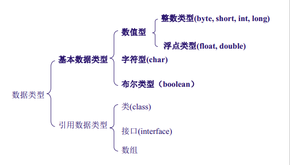

终于搞懂了Java中基本数据类型和引用数据类型的区别啦！
1. 数据类型有哪些？

1.1 基本数据类型
基本数据类型只有8个:byte、short、int、long、float、double、char、boolean
注意: String不是基本数据类型！！！是引用类型
1.2 引用数据类型
- 引用类型：都可以用null值作为值，也就是说可以在初始化的时候赋值为null，例如：String是引用类型，也就是说可以使用null作为值，即：String s = null;
- 引用数据类型分3种：类，接口，数组；
2. Java数据类型在内存中存储
2.1 Java对象的内存模型
- 堆内存:保存的是对象的具体信息，在程序之中堆内存空间的开辟是通过new完成的
- 栈内存:保存的是一块堆内存的地址，即:通过地址找到堆内存，而后找到对象内容，但是为了分析简化，可以简单地理解为：对象名称保存在栈内存中。
2.2 数据类型存储原理
1）基本数据类型的存储原理：所有的简单数据类型不存在“引用”的概念，基本数据类型都是直接存储在内存中的内存栈上的，数据本身的值就是存储在栈空间里面，而Java语言里面八种数据类型是这种存储模型；
2）引用类型的存储原理:引用类型继承于Object类（也是引用类型）都是按照Java里面存储对象的内存模型来进行数据存储的，使用Java内存堆和内存栈来进行这种类型的数据存储，简单地讲，“引用”是存储在有序的内存栈上的，而对象本身的值存储在内存堆上的；
综上：不论是基本数据类型还是引用数据类型，他们都会先在栈中分配一块内存，对于基本类型来说，这块区域包含的是基本类型的内容；而对于引用数据类型来说，这块区域包含的是指向真正内容的指针，真正的内容被手动的分配在堆上。
3. 参数传递过程中的不同
3.1 传递的是基本数据类型时
如果传递的是基本数据类型，此时形参是值本身，如果修改的形参值本身，那么当形参修改时，实参不会一起发生修改。这就类似于C语言中，如果传递的是值本身而不是传递变量的指针（地址），那么当形参发送修改时，实参不变。
3.2 传递的是引用数据类型时
如果传递的是引用数据类型，实参传给形参的值是对象的引用。如果修改形参引用的对象，那么实参引用的对象也会发生同样的变化。因为实参的引用拷贝给了形参，所以实参和形参引用同一个对象，对形参引用对象的修改就相当于对实参引用对象的修改。简单理解就是此时形参传递的是一个指向实际值的地址，当形参发生改变的时候，所执行的那个值也会发生改变。